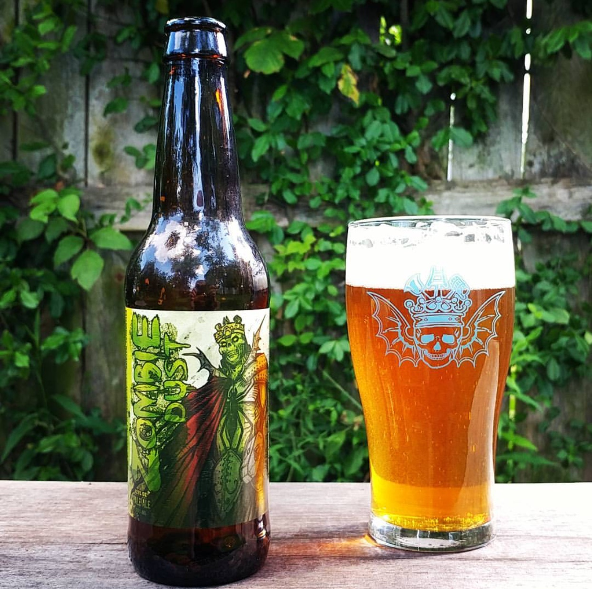

HOME
ALES
Zombie Dust Pale Ale
3 Floyds Brewing Co.
This beer's flavor is fruity and juicy with a note of pine. It has moderately high bitterness and a smooth finish that is both malty and bitter. The hop flavors grow fruitier as it warms. There is a substantial clean, sweet malt backbone that makes this beer very close to evenly balanced between malt and hops.
Located in Indiana, Three Floyds are strict adherents to the samurai code of the greman beer purity law. From our humble beginnings in 1996—armed with only a few hundred dollars, a five-barrel Frankenstein wok-burner-fired brew kettle, repurposed open Swiss cheese fermenters (Hammond Squares) and an old Canfield’s Cola tank—”It’s Not Normal” ales and lagers were born.
Check out their site HERE 